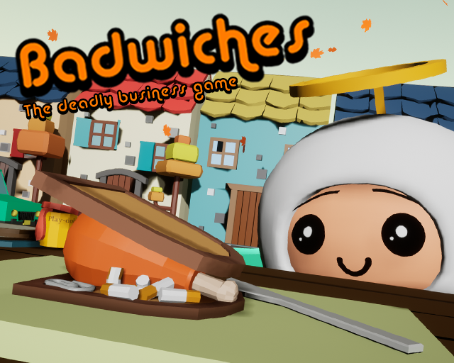
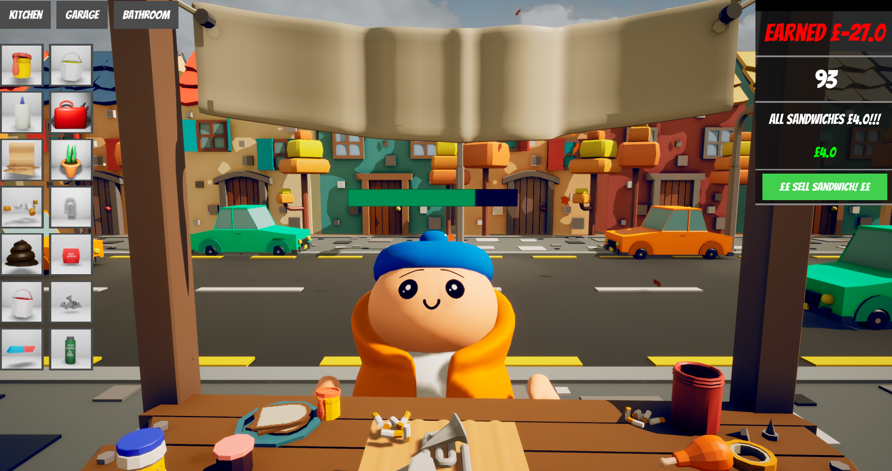
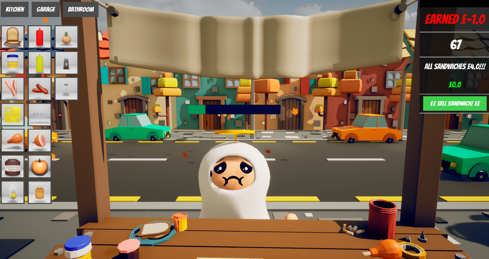
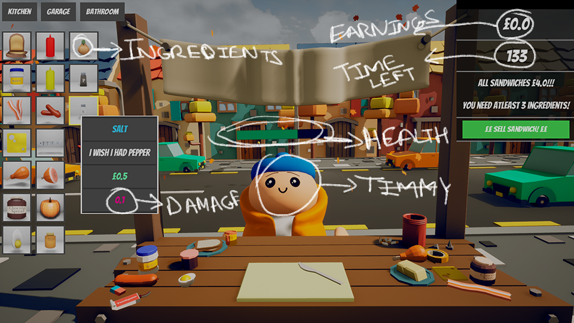

Badwiches
Badwiches is a fast-paced business sim built with Sollara Games in 48 hours for Ludum Dare 45, under the theme “Start with nothing.” You run a sandwich stand with no money and barely any real ingredients, so you fill orders with whatever you can scavenge from the kitchen, garage and bathroom — and hope your customers don't look too closely at what's between the bread.

The Game
I worked as programmer and project manager on a team of five, alongside Francesca Rice, Kyle, Alex and Tom, under our Sollara Games banner — the same team behind Niloc. The goal is simple to state and stressful to execute: reach £100 in two minutes selling sandwiches, but you start broke and short on proper ingredients. The only way to keep the till moving is to “cheap out” and pad orders with whatever's lying around the house — soap included — while keeping an eye on each customer's health bar before they catch on.

Theme & Risk/Reward
“Start with nothing” shaped the whole loop: no starting cash and no pantry of safe ingredients, so every sandwich is a small gamble between what a customer wants and what you can actually get your hands on in time. Push your luck with an inedible filler and you can hit your £100 target faster, but a customer who takes too much damage tanks your run — the tension between speed and getting caught was the core thing we were chasing across the jam.

Pipeline in 48 Hours
With five people and two days, keeping the pipeline simple mattered as much as any single system. The game runs in Unreal Engine, with models built in Maya and textured with flat colours directly in-engine to skip a slow UV/texturing round-trip; Substance Painter and ZBrush covered the handful of assets and characters that needed more detail. Photoshop handled the UI icons and promo art, LMMS and FMOD Studio covered music and sound, and GitKraken kept five people's changes from colliding in source control over the weekend.

Badwiches is free to play on itch.io, and the full Unreal Engine source is up on GitHub.